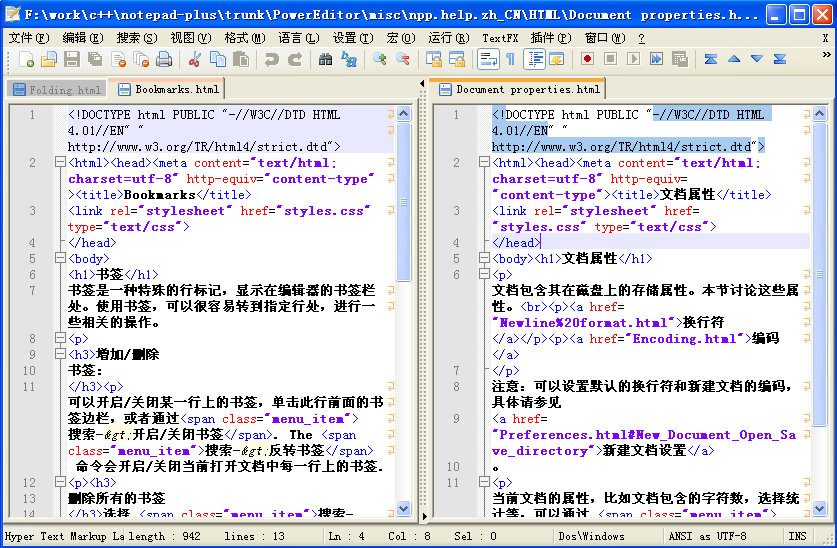

Notepad++基础教程
Notepad++是Windows平台上一款强大的文本编辑器，主要特点就是轻轻，可定制性强，再加上无数功能强大的插件，完全可以胜任绝大部分工作。作为程序员来说是必备工具。
功能对比Windows的记事本强大很多，但比Vim，Emacs还是有很大不如，当然EditPlus，UltraEdit也是非常好的选择，可惜这两个是收费软件。不在此文中介绍。
安装配置
可以手动去notepad++插件的官方网站下载：http://sourceforge.net/projects/npp-plugins/files/
Notepad++自带了插件管理工具，Plugins -> Plugin Manager -> Show Plugin Manager-> Avaliable一栏显示当前可用的插件列表，选中你要的插件，然后点击下面的Install即可自动下载和安装。列表里的都是官方认可的插件，品质较好。当然也可以自己去网上下载插件放到目录里面去。
下面列出一些软件开发中经常用到的一些功能。
书签功能
书签是一种特殊的行标记，显示在编辑器的书签栏处。使用书签，可以很容易转到指定行处，进行一些相关的操作，当阅读一个长文件时特别有帮助，绝对阅读源代码的好帮手啊。
在任意行点击左边栏或者按Ctrl+F2会出现蓝色小点，这表示添加了一个书签，点击蓝色小点或按Ctrl+F2可以取消该行书签。F2光标移动到上一个书签，Shift+F2光标移动到下一个书签。
多视图
你可以在 Notepad++ 中打开第二个编辑窗口，这样你就可以同时查看两个文档了（也可以是同一个文档）。如果它们是同一个文档的话，你就可以快速比较这两个文档，或者同时编辑文档的两个地方，而不需要滚动或通过书签来做到这点。这个对于阅读超过一屏源代码来说是非常有帮助的。
折叠
即根据文档语言可以隐藏文档中的多行文本，特别是对像C++或者XML 这样的结构化语言很有用。文本块分成多个层次，可以折叠父层的文本块，折叠后只会显示文本块的第一行内容。如果你想快速浏览文档的内容，并跳到指定文档位置的话，就相当有用了。取消折叠文本块（展开或取消折叠）将会再次显示折叠的文本块。这对于源代码阅读也是非常有帮助的。
- 折叠所有层次： Alt+0
- 展开所有层次： Alt+shift+0
- 折叠当前层次： Ctrl+Alt+f
- 展开当前层次： Ctrl+Alt+Shift+f
行定位
用于快速跳至某一行。按Ctrl+g会弹出一个对话框，可以选择输入绝对行号跳转或者相对于当前行做偏移量跳转。
列编辑
如果要在每一行开头输入相同的文字或者加上行号等则可以考虑使用列编辑。比如把光标移至最左边，按下Alt+c，在对话框里输入要添加的内容或数字及其增加方式就可以了。它会当前行一直加到最后一行。
另外一种方式是按住Alt+鼠标点击编辑多列的功能。现在可以按住Alt用鼠标左键选择多列然后输入想要的字符或者进行编辑了。比如删除每一行的行号。
向前回滚和向后回滚
向后回滚： Ctrl+z，向前回滚： Ctrl+y。
块匹配
选择一个括号，按Ctrl+b会跳转到与它对应的另外一半括号处。此处括号包括"("和"{"。
颜色标记
就是给内容用不同的颜色做标记，用法就是选择要标记的文本然后点击右键->Style token，选择一个标记即可。也可以通过点击右键选择删除颜色标记Remove style。
将Tab转换成空格
这个对于编写程序来说是非常有用的，一般项目里都不允许使用Tab键作为缩进而是使用空格，但是按Tab键缩进确实非常方便。在首选项->语言页面可以选择“以空格代替Tab”，同时可以配置一个Tab键替换成几个空格。这样就可以很方便的按Tab键进行缩进，按Shift+Tab进行反向缩进了。
行操作
- 复制当前行： Ctrl+d
- 删除当前行： Ctrl+l
- 删除到行首： Ctrl+Shift+BackSpace
- 删除到行尾： Ctrl+Shift+Delete
显示符号
在视图选项卡中能找到显示符号功能，这个的作用是可以显示空格、制表键、换行等 可以方便编辑，尤其可以防止无意中加入好多不需要的空格。
总结
以上只是一些非常常用的操作，事实上Notepad++的功能是非常多的，尤其是学会使用快捷方式可以极大的加快速度。接下来可以去学习Notepad++ 用户手册。
另外Notepad++拥有很多非常强大的插件，熟练使用其中一些插件可以大幅度提高工作效率。请参考Notepad++前端开发常用插件介绍
参考文献
快捷键大全
| 快捷键 | 动作 |
|---|---|
| Ctrl-O | 打开文件 |
| Ctrl-N | 新建文件 |
| Ctrl-S | 保存文件 |
| Ctrl-Alt-S | 另存为 |
| Ctrl-Shift-S | 保存所有 |
| Ctrl-P | 打印 |
| Alt-F4 | 退出 |
| Ctrl-Tab | 下一个文档 (显示所有打开的文件列表)。可以禁止此快捷键 - 参见 设置/首选项/全局. |
| Ctrl-Shift-Tab | 上一个文档 (显示所有打开的文件列表). 可以禁止此快捷键 - 同上. |
| Ctrl-W | 关闭当前文档 |
| 快捷键 | 动作 |
|---|---|
| Ctrl-C | 拷贝 |
| Ctrl-Insert | 拷贝 |
| Ctrl-Shift-T | 拷贝当前行 |
| Ctrl-X | 剪切 |
| Shift-Delete | 剪切 |
| Ctrl-V | 粘贴 |
| Shift-Insert | 粘贴 |
| Ctrl-Z | 撤销 |
| Alt-Backspace | 撤销 |
| Ctrl-Y | 重做 |
| Ctrl-A | 选择全部 |
| Alt-Shift-方向键, 或者 Alt + 鼠标左键 | 列模式选择 |
| Ctrl + 鼠标左键 | 开始新的选择区域。仅在多块区域有效 |
| ALT-C | 列编辑 |
| Ctrl-D | 复制当前行 |
| Ctrl-T | 当前行和前一行交换 |
| Ctrl-Shift-Up | 当前行或当前单个选中文本块上移 |
| Ctrl-Shift-Down | 当前行或当前单个选择文本块下移 |
| Ctrl-L | 删除当前行 |
| Ctrl-I | 分割当前行 |
| Ctrl-J | 连结行 |
| Ctrl-G | 打开转到对话框 |
| Ctrl-Q | 行注释/取消行注释 |
| Ctrl-Shift-Q | 块注释 |
| Tab (一行或多行被选中) | 插入制表符或空格 (缩进) |
| Shift-Tab (一行或多行被选中) | 删除行首制表符或空格(取消缩进) |
| Ctrl-BackSpace | 删除到单词开头 |
| Ctrl-Delete | 删除到单词末尾 |
| Ctrl-Shift-BackSpace | 删除到行首 |
| Ctrl-Shift-Delete | 删除到行尾 |
| Ctrl-U | 转换为小写 |
| Ctrl-Shift-U | 转换为大写 |
| Ctrl-B | 转到匹配括号处 |
| Ctrl-Space | 显示函数参数提示列表 |
| Ctrl-Shift-Space | 显示函数提示列表 |
| Ctrl-Enter | 显示单词提示列表 |
| Ctrl-Alt-R | 文本方向从右到走 |
| Ctrl-Alt-L | 文本方向从左到右 |
| Enter | 回车插入新行或分割文本到新行 |
| Shift-Enter | 插入新行或分割文本到新行 |
| 快捷键 | 操作 |
|---|---|
| Ctrl-F | 打开查找对话框 |
| Ctrl-H | 打开 查找 / 替换 对话框 |
| F3 | 查找下一个 |
| Shift-F3 | 查找上一个 |
| Ctrl-Shift-F | 在文件中查找 |
| F7 | 切换到搜索结果窗口（即版本5.2之前的激活子视图） |
| Ctrl-Alt-F3 | 查找 (快速) 下一个 |
| Ctrl-Alt-Shift-F3 | 查找 (快速) 上一个 |
| Ctrl-F3 | 选择并查找下一个（即版本5.6.5之前中的查找（快速）下一个） |
| Ctrl-Shift-F3 | 选择并查找下一个(即版本5.6.5之前的查找 (快速) 上一个) |
| F4 | 转到下一个结果 |
| Shift-F4 | 转到上一个结果 |
| Ctrl-Shift-I | 增量搜索 |
| Ctrl-n | 向下跳转（到下一个样式n标记的文本。 n 从1到5, 对于默认查找样式为0 |
| Ctrl-Shift-n | 向上跳转 (到上一个样式n标记的文本。n 从1到5，对于默认查找样式为0 |
| Ctrl-F2 | 标记/取消标记书签 |
| F2 | 转到下一个书签 |
| Shift-F2 | 转到上一个书签 |
| 快捷键 | 动作 |
|---|---|
| Ctrl-(Keypad-/Keypad+) | 或者 Ctrl + 鼠标滚轮按钮 (如果你的鼠标有这个键的话) 放大 (+ 或者 向上键) 和 缩小 (- 或者 向下键) |
| Ctrl-Keypad/ | 恢复视图到原始大小 |
| F11 | 转到/退出全屏视图 |
| F12 | 转到/退出切换快捷视图 |
| Ctrl-Alt-F | 折叠当前大纲级别 |
| Ctrl-Alt-Shift-F | 展开当前大纲级别 |
| Alt-0 | 折叠所有 |
| Alt-(1~8) | 折叠大纲级别 (1~8) |
| Alt-Shift-0 | 展开所有 |
| Alt-Shift-(1~8) | 展开大纲级别 (1~8) |
| 快捷键 | 操作 |
|---|---|
| F5 | 打开运行对话框 |
| Alt-F1 | 获取PHP帮助 |
| Alt-F2 | Google 搜索 |
| Alt-F3 | Wikipedia 搜索 |
| Alt-F5 | 打开文件(当前光标处的文件名) |
| Alt-F6 | 在新的实例中打开文件 (当前光标处的文件名) |
| Ctrl-Alt-Shift-R | 在 Chrome 中打开 |
| Ctrl-Alt-Shift-X | 在 Firefox 中打开 |
| Ctrl-Alt-Shift-I | 在 IE 中打开 |
| Ctrl-Alt-Shift-F | 在 Safari 中打开 |
| Ctrl-Alt-Shift-O | 通过 Outlook 发送 |